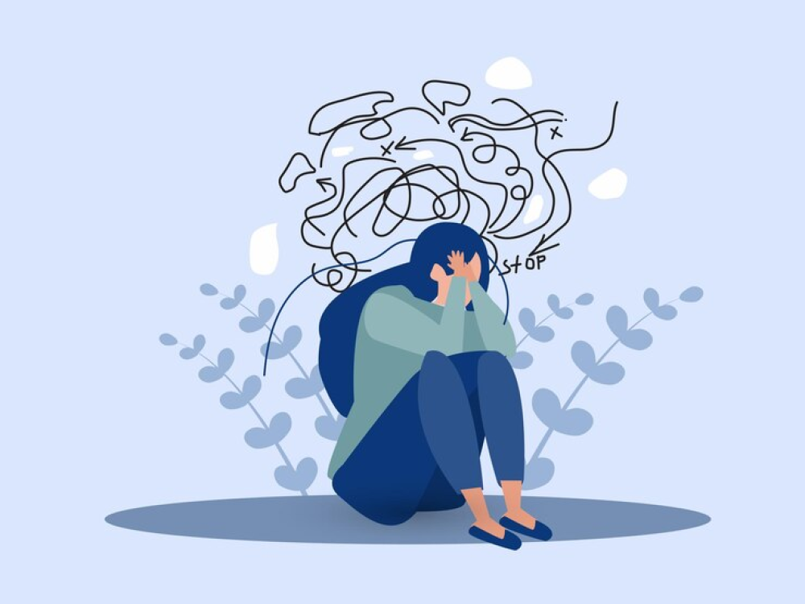
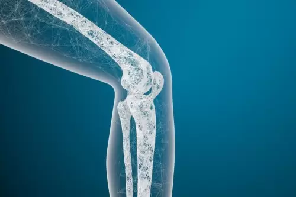
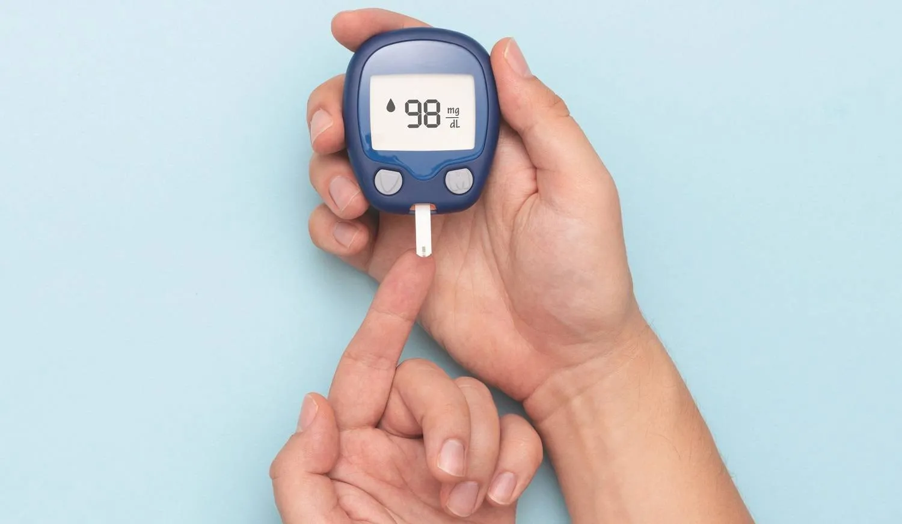
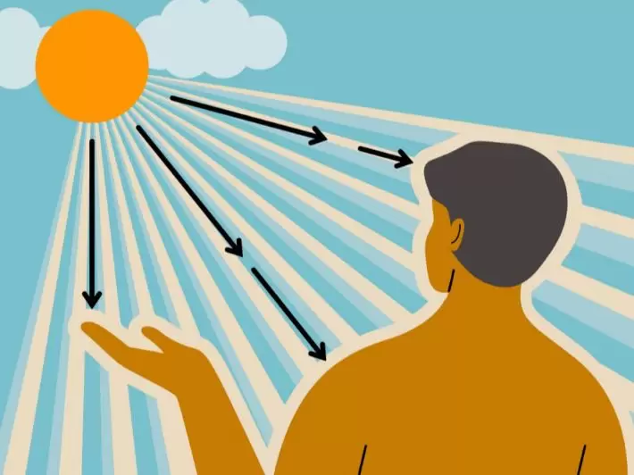
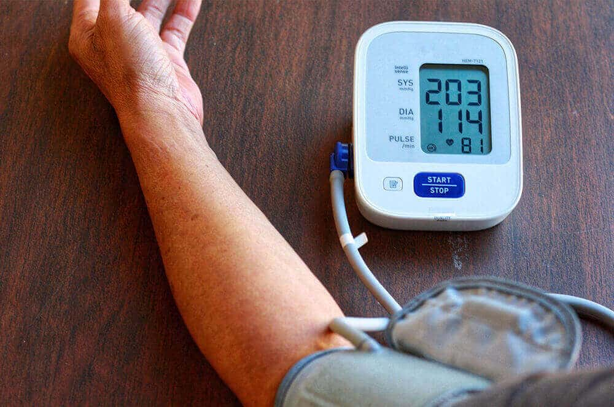
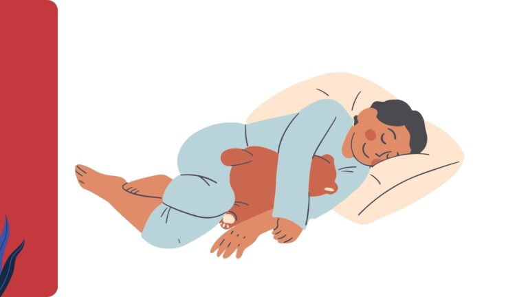

التغذية
فوائد شرب الماء على الريق وكيف يحسّن صحتك
يعد شرب كوب أو كوبين من الماء فور الاستيقاظ من أبسط العادات الصحية وأكثرها فائدة. يساعد على تنشيط الجهاز الهضمي، تحسين التركيز، وطرد السموم من الجسم.
نصائح طبية موثوقة
نقدم لك نصائح طبية مختارة بعناية من أطباء متخصصين لمساعدتك على الوقاية من الأمراض والحفاظ على حياة صحية أفضل
 مميز
مميز
أمراض القلب هي السبب الرئيسي للوفاة حول العالم، لكن اتباع عادات يومية بسيطة يمكن أن يُقلل خطر الإصابة بشكل كبير. من ممارسة الرياضة المنتظمة إلى الإقلاع عن التدخين، تعرف على أهم الخطوات التي يوصي بها أطباء القلب للحفاظ على صحة قلبك.
عرض ٩ نصائح
يعد شرب كوب أو كوبين من الماء فور الاستيقاظ من أبسط العادات الصحية وأكثرها فائدة. يساعد على تنشيط الجهاز الهضمي، تحسين التركيز، وطرد السموم من الجسم.

التوتر المزمن يؤثر على القلب، المناعة، والنوم. تعرف على تقنيات التنفس العميق، التأمل، وإدارة الوقت التي أثبتت فاعليتها في تقليل مستويات الكورتيزول.

هشاشة العظام لا تؤثر فقط على كبار السن — يبدأ بناء الكثافة العظمية من سن المراهقة. اكتشف أفضل المصادر الغذائية للكالسيوم وكيفية الحصول على فيتامين D الكافي.

التطعيمات هي الدرع الواقي الأول لطفلك من الأمراض الخطيرة. تعرف على الجدول الرسمي لوزارة الصحة وماذا تفعل إذا فاتك موعد تطعيم.

مرض السكري من النوع الثاني يمكن السيطرة عليه بل وعكسه في بعض الحالات من خلال التغييرات الغذائية وزيادة النشاط البدني. إليك الدليل العملي الشامل.

الأشعة فوق البنفسجية هي السبب الأول لشيخوخة الجلد وسرطان الجلد. تعلم كيف تختار واقي الشمس المناسب وكيف تضعه بشكل صحيح لحماية فعالة.

يلقب ضغط الدم المرتفع بـ"القاتل الصامت" لأنه غالباً لا يسبب أعراضاً واضحة. تعرف على أرقام الضغط الطبيعي وكيف تسيطر عليه بدون دواء أحياناً.

الألياف الغذائية لا تُغذّي جسمك فقط — تغذّي البكتيريا النافعة في أمعائك أيضاً. تعرف على أفضل المصادر الغذائية للألياف وكيف تزيد استهلاكها بشكل تدريجي.

قلة النوم تؤدي إلى السمنة، ضعف المناعة، والاكتئاب. اكتشف قواعد "نظافة النوم" التي تضمن لك نوماً عميقاً ومنتظماً دون الحاجة لأدوية.
جرب كلمة بحث مختلفة أو اختر تصنيفاً آخر
الترطيب الكافي يحسّن التركيز ويحافظ على صحة الكلى
المشي المنتظم يقلل خطر أمراض القلب بنسبة ٣٠٪
النوم الكافي يعزز المناعة ويُحسّن الذاكرة والتركيز
الإقلاع عن التدخين يقلل خطر السرطان والأمراض القلبية
غسل اليدين يمنع ٨٠٪ من الأمراض المعدية الشائعة